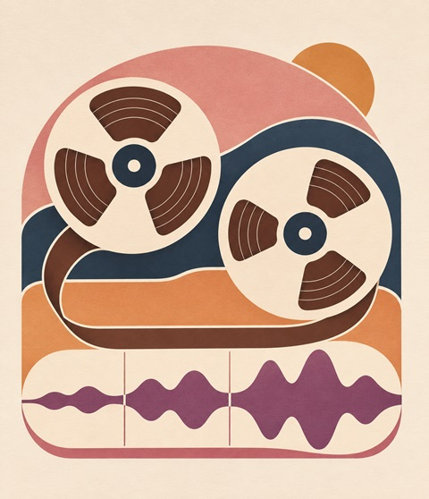

全部教材
设置
主题配色
纸白
米浆
雾蓝
淡紫
烟粉
薄荷
琥珀
石墨
午夜蓝

POP金曲里技
以《留一盏灯》为例，从四个旋律音写到有词、有伴奏的 Demo，再处理录音、混音、母带和交付。
从作曲开始
→
本书程序谱
→
词曲与编配
第1章
作曲
第2章
编曲
第3章
作词与 Demo 歌词
录音与后期
第4章
Demo 录音与编辑
第5章
分轨文件与混音
第6章
母带后期制作
交付与持续创作
第7章
比稿
第8章
行动与心态
制作试听
硬切与短交叉淡化
干混与带延迟的初混
伴奏中频的均衡对照
同均方根电平下的峰值限制